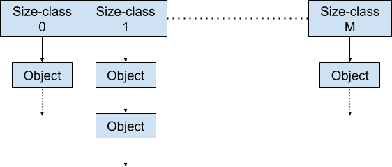
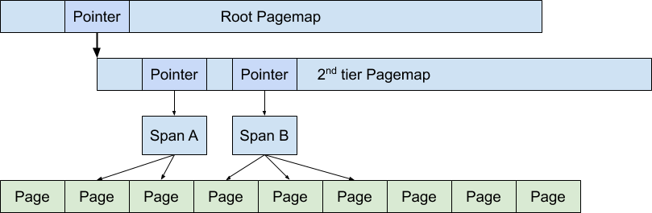

并发控制：互斥 (1)
本讲阅读材料
教科书 (Operating Systems: Three Easy Pieces, OSTEP) 第 28-29 章。课后小练习：
- 在
threads.h上，使用compare-and-swap(x86 提供的cmpxchg指令) 实现自旋锁替换spinlock.c中锁的实现并测试。- 设计合理的 fast/slow path，使用 CPU-local 缓存 + 全局页面分配完成 L1 (pmm) 实验
1. 互斥
1.1. 互斥的定义
有些时候，我们并不希望代码并发——当两个 sum++ 可以并发执行时，结果已经超出了我们能够掌控的范围。“互斥锁” (mutual exclusion, mutex) API 帮助我们实现这一点：
typedef struct {
...
} lock_t;
void lock(lock_t *lk); // 试图获得锁的独占访问，成功获得后返回
void unlock(lock_t *lk); // 释放锁的独占访问
不妨把线程想象成人，代码的执行就是人在物理世界中的行动 (物理世界就是共享内存)。lock_t 可以理解成是一个 “锁对象”，类似于厕所里的 “包间”——一旦我们 (线程) 进入，其他人就不得再进入。更恰当的比方 (系统中可以有很多锁对象) 是每一把锁都是系统中唯一的一份 “许可”。当有多个人 (先后或同时) 想要获得许可时，只有一个人能得到它，得到的人可以继续，而其他想要许可的人则必须等待，直到得到许可的人将许可归还 (一个人可以同时得到多份许可，即可以持有多把锁)。
互斥的定义
更严谨地说，lock/unlock，保证
在任何可能的线程调度下 ，若某个线程持有锁 (lock(lk)返回且未释放)，则任何其他线程的lock(lk)都不能返回。从状态机的视角，假设系统每次选择一个线程执行一条指令 (虽然这个假设并不严格成立)，我们认为lock(lk)返回时，线程就进入了 “持有lk” 的状态。而从初始状态开始，不存在任何状态机的执行路径，使得两个线程同时持有lk。
1.2. 互斥锁的使用
互斥锁的使用很简单，你可以把一段代码用 lock-unlock 包裹起来，它就不再会和其他持有同一把锁的线程并发。例如，如果你为 withdraw 上了锁，那么多个线程就可以安全地执行 withdraw：
int withdraw(unsigned int amount) {
int ret = FAIL;
lock(&bank_lock);
if (deposit >= amount) {
deposit -= amount;
ret = SUCCESS;
}
unlock(&bank_lock);
return ret;
}
此外，你可以用同一把锁保护另一个函数，这样可以阻止 withdraw 和 deposit 之间的并发：
int deposit(unsigned int amount) {
lock(&bank_lock);
...
unlock(&bank_lock);
}
看似简单？写代码可得千万小心，例如下面的代码就有 bug (你发现了吗)？
int withdraw_buggy(unsigned int amount) {
lock(&bank_lock);
if (deposit >= amount) {
deposit -= amount;
return ret;
}
unlock(&bank_lock);
return FAIL;
}
虽然上面的代码功能看起来没问题，但在 withdraw 成功返回的时候直接 return 忘记释放 bank_lock——这可是个非常严重的问题。C 语言更像是汇编，并不非常适合表达人类对代码的认识——现代语言在这一点上做得好得多，支持 RAII (Resource Acquisition Is Initialization)：
class HoldLock {
lock_t *lock_;
public:
HoldLock(pthread_mutex_t *lk): lock_(lk) {
lock(&lock_);
}
~HoldLock() {
unlock(&lock_);
}
}
编译器会帮助我们保证在函数调用时上锁、函数返回时解锁：
int withdraw_raii(unsigned int amount) {
HoldLock(&bank_lock);
if (deposit >= amount) {
deposit -= amount;
return ret;
}
return FAIL;
}
这些设计大幅增加了代码的安全性和可靠性 (当然还有对安全性设计的更彻底的语言，例如 Rust，我们很可能会在未来把操作系统课的一部分迁到 Rust 上)，但一定程度上增加了我们直接把代码映射到机器指令时的阅读困难。
2. 实现互斥的挑战
2.1. Peterson 算法
在之前的课上，我们给出了一个能够实现两个线程互斥的 Peterson 算法：
int volatile x = 0, y = 0, turn;
void thread1() {
x = 1; turn = T2;
while (y && turn == T2) ;
// critical section
x = 0;
}
void thread2() {
y = 1; turn = T1;
while (x && turn == T1) ;
// critical section
y = 0;
}
大家应该还记得我们在课堂上用手工 (和用 model checker) 证明了它的正确性 (两个线程不能同时进入临界区)。
2.2. Peterson 算法：水面下的冰山
但是，Peterson 算法 (代码实现) 的正确性是有假设的——Model checking 之所以称之为 model checking，是因为我们做出了一个非常重要的简化：我们的证明基于
遗憾的是，我们都知道现代多处理器系统为了顺序程序执行的速度，通常使用了 store buffer、多级缓存、乱序执行的设计。在这些机制的共同作用下，我们就有了 “并发编程：从入门到放弃” 中的例子：
int volatile x = 0, y = 0, x_val = -1, y_val = -1;
void thread1() {
[1] x = 1; // store(x)
[2] y_val = y; // load(y)
}
void thread2() {
[3] y = 1; // store(y)
[4] x_val = x; // load(x)
}
void check_result() {
assert( (x_val != 0 && y_val != 0) &&
(x_val == 1 || y_val == 1) );
// assert fail: x_val == 0 && y_val == 0
}
在你读完上面的代码后，再回来看 Peterson 算法 (我们提供了一个 peterson.c)：
x = 1;
turn = T2;
while (1) {
if (!y) break;
if (turn != T2) break;
}
这不就是上面的例子吗？先写入 x 和 turn，然后读 y……所以你预期 y 的 load 可以被提前到两个 store 之前，对另一个线程也是……这不就错了……吗？。没错！你应该留意到我们在代码中增加了很多 “栅栏”：
#define FENCE asm volatile ("mfence")
2.3. 内存模型 (Memory Model)
既然我们的机器不符合 (过度) 简化的 “顺序” 模型 (也称为 sequential consistency)。下图是符合 x86 处理器实际行为的一个模型 (有兴趣的同学可以参考 x86-TSO 的论文 “x86-TSO: A rigorous and usable programmer's model for x86 multiprocessors”)：

此外，ARMv8 的 memory model 也是很不错的文档。在硬件规定的基础上，程序设计语言也同样定义了从 “直接解释程序执行” 意义上的并发行为 (大家应该还记得我们在编写非递归的 Tower of Hanoi 代码时，用到了 C 语言的操作语义模型)，例如 C/C++11 Memory Model 和 Java Memory Model。
总的来说，这些话题并不适合在这门课上讨论。大家需要记住的是：
2.4. 数据竞争
非正式地说，数据竞争就是两个 “
- 它们位于不同的线程；
- 它们访问了同一个内存地址；
- 它们中至少有一个是写。

所谓 “竞争”，两个可以同时发生的共享内存访问可能发生 “赛跑”：
void thread1() {
if (x == 0) do_something();
else do_something_else();
}
void thread2() {
x = 1;
}
根据两个线程共享内存访问 “向前跑” 的速度，跑得快的访问将先被执行。因此：
- 按照 $T_1 \to T_2$ 的顺序执行，load 将会得到 $t = 0$，
- 按照 $T_2 \to T_1$ 的顺序执行，load 将会得到 $t = 1$。
这就是为什么数据竞争中的内存访问至少有一个会是写——写操作会对系统状态产生影响，从而引发微妙的后果：通常我们的程序中可能会连续进行多次内存访问，例如之前 withdraw 的例子：
if (deposit >= amount) {
deposit -= amount;
ret = SUCCESS;
}
对于线程来说，它会执行 “读余额” → “判断余额是否不足” → “更新余额” 三件事。如果发生数据竞争，那么我们在 “判断余额是否不足” 时，所用的余额数值就不再是当前最新的数值，导致逻辑错误。一段代码可能被打断并存在 “多种运行结果”，加上处理器可能乱序执行内存访问，数据竞争的后果是非常危险的。
简而言之，数据竞争 = UB
我们不妨把数据竞争定义成 undefined behavior，程序一旦出现数据竞争，之后 “发生任何事” 都被认为是可能的。数据竞争在本学期的编程中绝对禁止。很快你们就会在操作系统实验中遇到数据竞争引发的致命 bug——然后就会体会到这个定义的良苦用心。
那么什么可以阻止数据竞争呢？
互斥 ！大家不妨回到互斥的定义。被同一把锁保护的两条指令，是绝对不可能 “同时发生” 的。当然了，刚才的 Peterson 算法里本身就有数据竞争……
3. 实现互斥
3.1. 问题分析
我们对互斥锁 (lock/unlock) 的额外期望是能救回多处理器共享内存程序上的原子性、顺序和可见性 (当然是依靠硬件提供的机制实现)——我们希望同一个 lock/unlock 保护的一段代码执行 (可以在状态机上标出) 是不可分割的 “盒子”。阻止 “盒子” 并发意味着如果我们考虑状态机上的所有路径，盒子的执行都能排出一个顺序 (而不能并发执行)：
例如，两个盒子 ($B_1$ 和 $B_2$) 要么按照 $B_1 \to B_2$ 的顺序执行，要么按照 $B_2 \to B_1$ 执行。这满足了我们 “
顺序 ：盒子中对共享内存的乱序读写不能越过lock/unlock的边界，这限制了实际处理器执行指令时的乱序行为只能在盒子 (同一个线程) 中发生。可见性 ：如果两个盒子按照 $B_1 \to B_2$ 的顺序执行，那么 $B_1$ 中所有的写操作，都必须在 $B_2$ 中可见，反之亦然。这保证了盒子之间共享内存访问的可见性。
当然阻止 “指令执行的乱序” 和 “确保指令效果的可见性” 这两件事在 “共享内存” 的状态机模型中压根就没有定义过啊！此外，在现代多处理器系统上纯粹使用 load/store 指令实现互斥是 (理论上) 不可能的：Consensus Number 小的操作 (例如 load/store) 实现更复杂的操作 (例如并发队列) 根本就是不可能的！
- Maurice Herlihy. Wait-free synchronization. ACM Transactions on Programming Languages and Systems, 11(1), 124-149, 1991.
3.2. 软件不够，硬件来凑
事到如今，问题反而简单了——我们
请大家阅读教科书 28 章关于原子指令以及如何用原子指令实现基于自旋的互斥锁。我们在这里要补充的是，原子指令不仅能阻止指令乱序，还可以确保指令的效果在多处理器之间可见。
3.3. 互斥锁：为我们提供的保证
借助原子指令，对于按时间顺序的盒子执行 $B_1 \to B_2$，假设 $B_1$ 中有对 x 的写，$B_2$ 中有对 x 的读：
- $B_1$ 内部
store(x)可能被乱序执行 (由处理器保证 $B_1$ 内部load(x)的一致性)，但不能越过unlock中的xchg； - $B_2$ 中，
load(x)可能被乱序执行 (同理 $B_2$ 内部的一致性由处理器保证)，但不能越过lock中的xchg； - 在 $B_1$ 中
unlock中的xchg完成前，保证所有的数值到达内存，因此 $B_2$ 的lock之后的load(x)能确保读到 $B_1$ 中写入的数值。
互斥锁为我们提供的保证
被同一个互斥锁保护的所有代码，一定能在全局 (上帝视角) 上排出一个执行顺序 $B_1 \to B_2 \to \ldots \to B_n$，并且我们
简化的状态机模型依然能对 $B_i$ 中执行的指令成立 。这一重要特性极大地简化了我们理解并发程序的难度：
- 同一个盒子 ($B$) 中的代码属于同一个线程，单线程程序可以假设指令按顺序执行。
- 虽然 $B_i, B_{i+1}$ 可能运行在不同的处理器上，但 $B_i$ 中的 unlock 和 $B_{i+1}$ 中的 lock 保证了指令执行的顺序和可见性。
4. 并发数据结构
4.1. 数据结构
当我们谈数据结构的时候，其实分成两个部分：
- 抽象数据类型 (ADT)，即我们使用数据结构时调用的接口，例如一个整数的集合，支持
insert(x),delete(x)和rank(x)返回集合中小于等于x的元素个数。 - 数据存储和操作的实现，例如数据存储在内存中的 layout、操作实现的方法等。
我们已经学过很多经典的抽象数据类型：栈、队列、集合……；也学习过很多它们的高效实现：数组、链表、红黑树、Fibonacci 堆……，我们不妨就混称为数据结构。我们在描述它们的时候，都使用类似于单处理器计算机执行指令的伪代码；并且我们在分析数据结构的性能时，通常也采用关键的操作数量 (例如比较、赋值等) 衡量它的时间复杂度、用使用的内存大小衡量空间复杂度。
4.2. 可串行化的并发数据结构
如果我们的多线程并发程序 (操作系统上的多线程程序或者操作系统内核中的线程) 希望访问数据结构，会怎么样呢？通过内存实现的数据结构中的一个操作通常涉及多次内存的访问——大家一定回想起 Peterson 算法在现代多处理器系统上的正确性，立即明白实现功能正确的并发数据结构是很困难的事情。
就连定义什么是 “正确” 的并发数据结构也并不显然。在这里，我们希望并发数据结构满足 “可串行化” (serializability)，即并发数据结构的一次并发执行上观察到的执行结果 (数据结构在每个线程上执行的操作和操作的返回结果) 能够和某一个顺序程序上对的数据结构的操作等价。可串行化并不是并发数据结构正确的唯一标准——在对性能要求更高的领域 (主要是分布式系统)，甚至可能会允许不可串行化的数据结构。
做一个好的并发数据结构 (哪怕是个 “简单” 的数据结构) 都不是一件 trivial 的事情，例如这篇文章里，连硬件的支持都用上了。很酷是不是？因此在直到你对这个问题有了更深入的认识之前，遵循教科书上的建议，用简单的锁来保护你的数据结构：
Many operating systems utilized a single lock when first transitioning to multiprocessors, including Sun OS and Linux. In the latter, this lock even had a name, the big kernel lock (BKL).
实现可串行化的最简单方式就是把所有的访问真正地串行化——记得我们的自旋锁/互斥锁保证了临界区的原子性、顺序、可见性。
void set_insert(Set *s, int x) {
lock(&s->lock);
set_insert_(s, x);
unlock(&s->lock);
}
void set_remove(Set *s, int x) {
lock(&s->lock);
set_remove_(s, x);
unlock(&s->lock);
}
在大部分时候，这样的处理都是安全且有效的——只要这个数据结构没有被非常频繁地访问。请大家阅读教课书第 29 章 “locked data structures”。
4.3. 实现高性能的 malloc/free
如果多个处理器上的线程对数据结构的访问非常频繁，此时再使用锁，就会导致 “一核出力，他人围观” 的情况。提高多处理器上并发数据结构性能的关键之一是减少在锁上拥塞 (contention) 的时间——如果宝贵的时间都花在了 spin 上却没有实质的进展，那就是白白浪费了多处理器的计算力了。更糟糕的是，设计不当的算法甚至有可能让 cache line 在处理器之间来回“弹跳”，导致多处理器下的性能甚至低于单处理器。
在这里，我们介绍如何分析基于系统调用实现 malloc/free 的问题，设计合理的并发数据结构实现它们。malloc/free 大家是 libc 标准库的一部分：
void *malloc(size_t size);
void free(void *ptr);
请大家阅读手册 (man 3 malloc)，温习一下其中的重要细节。
4.3.1. malloc/free: 空闲的内存从哪里来？
想要实现 malloc 分配内存，我们必须得要能得到一定数量 “空闲” 的内存才行。内存的分配和释放利用底层系统提供的机制 (通常能够用来分配很大的内存)，实现各种大小、类型对象的分配和释放。大家带着 “状态机模型” 来理解一下下面的一行代码：
int *ptr = malloc(1 << 30);
ptr[123456] = 7;
假设 malloc 分配成功，返回的指针 ptr 就可以访问——但我们几乎可以确信的是，如果在 malloc 返回之前，这个地址一定是不可访问的。因为
如果想知道 Linux 系统是如何为我们分配内存的，大家不妨可以自己写一个小的 malloc-workload.c，然后用 strace 观察执行的系统调用序列，然后你会发现 Linux 操作系统为我们提供了 brk 和 mmap 两个系统调用，可以用来申请连续的内存。因为系统调用有一定的开销，因此我们通常一次性问操作系统请求较大的内存，而在进程本地进行中小内存的分配。而在计算机硬件 (我们的实验) 上，操作系统可以直接访问物理内存，因此操作系统直接管理系统中可用的物理内存。
更进一步：libc 里的 malloc 是怎样使用系统调用的？
如果你想知道 libc 里的 malloc/free 是如何使用系统调用的，你可以写一些典型的 workloads:
- 大量分配大内存
- 大量分配小内存
- 混合内存分配
- 分配大量内存后全部回收
- ……
编译运行后，使用 strace 工具查看系统调用的序列。如此，你就可以在一定程度上 “逆向工程” 出 libc 分配内存的一些基本策略。在《操作系统》课上动手实践，玩一玩实际的操作系统能增进大家对操作系统的理解。
4.3.2. malloc/free: 并发数据结构
在一定的抽象层面上对需求进行分析有助于我们更好地理解问题。其实，malloc/free 的本质就是维护一个并发数据结构。一方面，我们能从操作系统 (计算机硬件) 上分配得到较大的内存空间——一段连续、可用的内存，可以看成区间的集合
$$M = \big\{ [L_0, R_0) \cup [L_1, R_1) \cup \ldots \cup [L_m, R_m) \big\} $$
同时，已被分配的内存 (堆区) 也可以看成是区间的集合：
$$ H = \big\{ [\ell_0, r_0), [\ell_1, r_1), \ldots, [\ell_n, r_n) \big\} \subseteq M$$
所谓 malloc($s$) 就是给定大小 从 $ M\setminus H$ 中找到一个区间 $[\ell, r)$ 满足 $r - \ell \ge s$，更新
$$ H' = H \cup \{ [\ell, r) \} $$
在找不到时，我们一方面可以向操作系统申请 $M$ 中的内存，也可以返回分配失败；而 free 就是给定一个区间的左端点 $\ell_i$，将分配的内存回收：
$$H' = H \setminus \{ [\ell_i, r_i) \}$$
这样看起来 “复杂” 的问题一下就变得干净了——通过适当的抽象 (这是解决计算机科学问题的常见方法)，你可以提出自己的分配策略，例如空闲的空间 $M \setminus H$ 也可以写成是区间的集合；我们可以用链表把这些空闲的区间 (链表的指针可以直接位于区间中) 链接起来 (相当于用链表维护 $M \setminus A$ 中的区间)，分配时遍历链表，找到某个空间不少于 $s$ 的区间，然后更新链表。更复杂的，你甚至可以用平衡二叉树在 $O(\log n)$ 的时间里完成内存分配。
4.3.3. malloc/free 的性能分析
基于链表的 malloc/free 能否满足应用程序对内存分配各方面的需求呢？
抛开 workload 谈优化就是耍流氓
对于同一个集合数据结构来说，99% 读 1% 写；1% 读 99% 写，这两种情况下的算法设计能一样吗？不同的应用场景很可能有不同的需求——甚至有时候总是一个线程写，很多线程读。如果希望调优程序的性能，一定要先了解 workloads。
这也是为什么很多研究都需要基准程序，它们代表了各种典型应用场景下的 workloads。“不服跑个分” 对吧？
那怎么从程序的运行或者基准程序得到workloads呢？课堂上我们给了 mtrace.c，里面定义了一个伪装的 malloc，它会偷偷调用系统中真正的 malloc (通过 dlsym 得到)，但同时可以记录一些额外的信息。
void *malloc(size_t size) {
static void *(*real_malloc)(size_t) = NULL;
if (!real_malloc) {
atexit(print_stats);
real_malloc = dlsym(RTLD_NEXT, "malloc");
}
buf[LOG2(size)]++; // profile
return real_malloc(size);
}
借助动态链接库机制，我们只需要把 mtrace 编译成共享库，并且抢在 libc 之前加载，就可以把 malloc 这个符号 “占坑” (动态链接时，全局符号先到先得)，这样就可以查看程序 malloc 的统计啦！
思考题：trace malloc/free够吗？
不止一个库函数可能会分配内存，例如
strdup,asprintf... 如何监控所有的内存分配？
4.3.4. 并发数据结构设计
在理解了 workload 以后，我们可以整理出 malloc/free 的主要矛盾：
- 尽量让线程能互不影响地独立分配，否则分配频繁的程序会遇到瓶颈——今天我们已经能买到有 128, 256 甚至更多线程的处理器。
- 大内存/小内存的分配频率通常是很不相同的，应当分开考虑。分配一段相对较大的内存，势必需要使用一段时间才能 “回本”，只分配不使用不是典型的应用场景。这也注定了大内存的分配频率会远远小于小内存。
- 根据具体情况具体分析——在 C 应用程序、内核、JVM 三个典型的场景里，workloads 又有细微的区别：C 程序的分配不太规律，要避免内存的浪费和碎片；内核中固定大小内存的分配相对比较频繁；JVM 有大量的内存分配，但绝大部分生存周期很短。
在 malloc/free 算法的设计上，我们使用了计算机系统中常见的一种技术：区分 fast/slow paths。在之前的课程中，我们学习到典型的有 fast/slow path 的系统是计算机硬件中的 memory hierarchy: 基于内存访问的局部性，cache hit 占绝大部分情况，因此处理器可以快速地获得内存里的数据，只在 cache miss 时才去内存取数据。在计算机硬件中，branch prediction, speculative execution 也都是这样的例子。
Thinking: Fast and Slow
有趣的是，人类也是这样的系统：我们有一套快速简单的反应系统能高效地处理日常事务：吃饭、睡觉等简单事务的处理似乎 “并不经过大脑”。与此同时，在我们面临复杂决策、做数学题的时候，又有一套耗能更高、逻辑更严密的推理系统，只有我们觉得问题没法简单解决时，才会调用这套系统。
当然了，大家在编程的时候最好不要使用 “不经大脑” 的系统——虽然根据我们的经验，很多同学会处于模糊的 “无脑编程” 状态，随便写一些代码，然后再胡乱调试。正确的方式是一边编写，一遍试图理解每一行代码的行为和每一块代码的 specifications——这几乎总是需要大脑的 slow system。
我们试图把内存分配问题分成两种情况：
- (fast/common path) 直接从线程本地立即得到内存，几乎不涉及复杂的同步或锁的争抢。因此 fast path 可以很快执行完成，但有一定的概率失败。
- (slow/uncommon path) 在 fast path 失败时，允许我们付出额外的代价 “纠正” 之前的失败。只要一次纠正的代价均摊到 fast path 上比较小 (哪怕使用全局的锁)，整个系统的性能就依然很高。
例如，我们不妨把可用的内存分成一个一个的 “页面” (page)，设定一个较为可观的大小，例如 8 KiB, 32 KiB 等。每个线程都拥有一个用于分配的页面；于是，当 malloc 发生时：
-
(fast path) 首先试图在线程自己拥有的 page 当中进行分配，分配时不妨为这个 page 上锁 (因为可能有来自其他线程并发的 free；系统允许在一个线程分配的内存在另一个线程回收)。虽然上了锁，但不同的线程的 page 是不同的，因此线程依然可以并行地分配内存。
- 相对应的 free 时，获得对象对应页面的锁后回收——如果 page 的分配保证对齐到 page 边界，我们可以直接使用
ptr & (PAGESIZE - 1)获得页面的首地址。 - 这里有一个小技巧，我们可以活用 C 语言提供的特性，定义结构体管理页面。这会使你写出更干净清爽的 L1 代码：
typedef union page { struct { spinlock_t lock; // 锁，用于串行化分配和并发的 free int obj_cnt; // 页面中已分配的对象数，减少到 0 时回收页面 list_head list; // 属于同一个线程的页面的链表 ... }; // 匿名结构体 struct { uint8_t header[HDR_SIZE]; uint8_t data[PAGE_SIZE - HDR_SIZE]; } __attribute__((packed)); } page_t;
- 相对应的 free 时，获得对象对应页面的锁后回收——如果 page 的分配保证对齐到 page 边界，我们可以直接使用
-
(slow path 1) 当 fast path 失败时，我们使用全局的锁分配一个新的页面，并在新的页面中分配内存——此时分配总是会成功。当然，分配新的页面意味着线程将会 “拥有” 不止一个 pages。我们可以用合理的数据结构把这些页面维护起来，例如链表。
- (slow path 2) 当申请巨大的内存 (例如一个或多个页面大小的内存) 时，我们同样持有全局的锁进行分配。因为大内存的分配总是意味着这些分配的内存需要 “使用”，所以全局的锁在实际中预期应该不会成为严重的性能瓶颈。
可以说，所有现代的 malloc/free 算法都是基于上述的 fast/slow path 设计的。例如在 TCMalloc 中，每个 thread (现在更先进的实现是每个 cpu) 有 88 个常见大小的分配器：

分配小内存对象时，我们的 fast path 直接找到比我们待申请对象大一些的 size-class，其中所有的空闲对象组织成单向链表，一条原子指令就能完成分配/回收。当 fast path 无法找到空闲的对象时，进入 slow path 分配一个新的 per-thread (per-cpu) page。
在 slow path 中，“central free list” 实际是一个多叉的线段树 (radix tree)，能够支持快速地、以 page 为单位的内存分配。因为以 page 为单位，数据结构的开销就被很大程度地均摊了。

除此之外，TCMalloc 还为每个 class-size 都提供了一个 central free list，进一步增加并行度 (但会浪费一些空间——但在操作系统上的进程里，分配但不访问的页面只是被标记，因此实际引起的代价是低得多的)。在一个工业级的 malloc/free 中，诸如此类的细节数不胜数，例如其他增加 cache/TLB friendliness 的细节。
为什么都是外国人、外国公司？
复杂、高效、可靠的系统很难在小作坊里生产出来，这也是为什么大家一谈及 “国产软件”、“国产芯片”、“国产操作系统”，总是联想到各种骗子公司 (“国产芯片” 的 flag 居然成了神预言) 和流产的国家项目。如果千千万万大学生学习的都是 “小作坊” 式的工作方式，指望少数几个人支撑起中国的系统硬件/软件产业，根本就是天方夜谭。
现代系统设计有成熟的理论、技术、配套的现代化工具，遗憾的是，我们国家掌握这些工具的人群太少。《操作系统》等系列课程作为大家学习 “系统” 的起点 (虽然我们讲解的都是简化的版本，但基本原理和思想方法和现代软件系统一致)，希望帮助大家不再畏惧查阅手册和使用工具，也不再畏惧似乎有些困难的系统编程。
如果你对实际系统的 malloc/free 有兴趣，可以阅读参考资料：